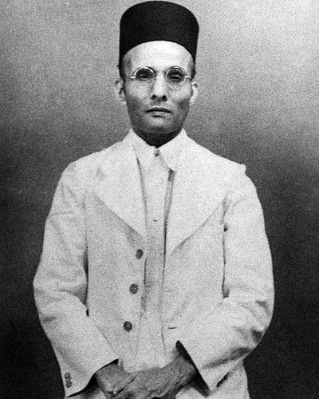

Ideologies / Nationalist
What is Hindutva?
Hindutva is a political ideology in the Nationalist family. Savarkar defined a Hindu as someone for whom India is both fatherland and holy land. Hindutva is therefore a national and cultural identity, wider than Hinduism as a faith. It calls for a strong, unified and militarily capable Hindu nation, and regards communities whose holy lands lie elsewhere as not fully belonging.
A common nation, a common race, a common civilisation.
Defined from: V. D. Savarkar, Essentials of Hindutva (1923)
See how close you are to Hindutva Dare a friend to answer as one


Where Hindutva stands on 13 axes
Each axis runs from 0 to 100. A score of 50 is the middle. On a classic compass it sits in the Authoritarian Right quadrant.
| Axis | Position | Score | In words |
|---|---|---|---|
| EconomyMarket to Planned | 45 | Balanced | |
| OwnershipPrivate to Collective | 25 | Strongly Private | |
| RightsLiberty to Security | 70 | Strongly Security | |
| GovernmentDemocracy to Autocracy | 45 | Balanced | |
| StructureDecentralised to Centralised | 75 | Strongly Centralised | |
| NationInternationalist to Nationalist | 100 | Very strongly Nationalist | |
| ImmigrationMulticulturalist to Assimilationist | 95 | Very strongly Assimilationist | |
| ValuesProgressive to Traditional | 85 | Very strongly Traditional | |
| TechnologyAccelerationist to Precautionary | 40 | Leans Accelerationist | |
| EnvironmentIndustrialist to Environmentalist | 30 | Strongly Industrialist | |
| ReligionSecular to Religious | 80 | Strongly Religious | |
| MilitaryPacifist to Militarist | 80 | Strongly Militarist | |
| TradeFree Trade to Protectionist | 70 | Strongly Protectionist |
Ideologies closest to Hindutva
- National Conservatism89% alike
- Religious Zionism84% alike
- Neo Libertarian Falangism81% alike
- Garveyism81% alike
- Romantic Nationalism81% alike
Its opposite on this map is Ecofeminism, at 22%.
Parties near Hindutva
- Law and JusticePoland. Polski model państwa dobrobytu (2019)89% alike
- Bharatiya Janata PartyIndia. Modi Ki Guarantee (2024)89% alike
- VoxSpain. Un programa para lo que importa (2023)88% alike
- Brothers of ItalyItaly. Pronti a risollevare l'Italia (2022)86% alike
Common questions
What is Hindutva?
Hindutva is a political ideology in the Nationalist family. Savarkar defined a Hindu as someone for whom India is both fatherland and holy land. Hindutva is therefore a national and cultural identity, wider than Hinduism as a faith. It calls for a strong, unified and militarily capable Hindu nation, and regards communities whose holy lands lie elsewhere as not fully belonging.
What does Hindutva believe?
In one line: A common nation, a common race, a common civilisation. Its strongest positions are Nationalist, Assimilationist, Traditional. Savarkar defined a Hindu as someone for whom India is both fatherland and holy land. Hindutva is therefore a national and cultural identity, wider than Hinduism as a faith. It calls for a strong, unified and militarily capable Hindu nation, and regards communities whose holy lands lie elsewhere as not fully belonging.
Who founded Hindutva?
Hindutva is defined here from Essentials of Hindutva (1923) by V. D. Savarkar. The thinker most tied to it is Vinayak Damodar Savarkar (1883 to 1966).
Is Hindutva left wing or right wing?
On a classic two axis compass Hindutva falls in the Authoritarian Right quadrant, which means the economic right and the authoritarian side. Left and right hide a lot, though, which is why EthosScales scores it on thirteen separate axes.
How is Hindutva different from National Conservatism?
They are close: 89% alike. The biggest gaps are on Structure, where Hindutva scores 75 and National Conservatism scores 60, and Technology, where Hindutva scores 40 and National Conservatism scores 55. On each axis, 0 is one end and 100 is the other.
Think this is wrong? Suggest a correction. The scores are editorial estimates.